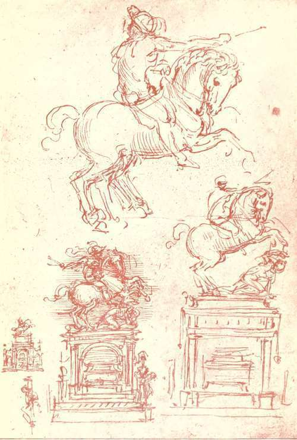

The Records, 1494-1519. Part 5
Description
This section is from the book "Leonardo Da Vinci", by Edward McCurdy. Also available from Amazon: Leonardo Da Vinci.
The Records, 1494-1519. Part 5
"Caesar Borgia of France, by the Grace of God Duke of Romagna, etc.....
"To all our lieutenants, castellans, captains, condottieri, officials, soldiers and subjects hereafter cognisant of this decree, we constrain and command, that to the bearer, our most excellent and well beloved servant, Architect and Engineer-in-Chief, Leonardo Vinci,-whom we have appointed to inspect strongholds and fortresses in our dominions, to the end that according to their need and to his counsel we may be enabled to provide for their necessities,-they afford a passage absolutely free from any toll or tax, a friendly welcome both for himself and his company, freedom to see, examine and take measurements precisely as he may wish, and for this purpose assistance in men as many as he may desire, and all possible aid, assistance and favour, it being our will that in the carrying out of any works in our dominions every engineer shall be bound to confer with him and to follow his advice.
"Given at Paris 18 August, 1502."
This alone gives the touch of reality to the whole episode. Notes made during his journey are on " the dovecot and the palace steps of Urbino," " the bell of Siena," "the library of Pesaro," " the harmony of the falling water at the fountain at Rimini," " the breaking of the wave upon the shore, as observed at Piombino," and the laws which govern it; " each place," in Pater's words, " appearing as fitfully as in a fever dream."
1 Alvisi, "Cesare Borgia," p. 537.
More germane to the duties of his position are the notes on the rock of Cesena, on the necessity for bastions for the tower of Porto Cesenatico, the ground-plan of the fortress of Urbino, the statements of the distances between the various towns of Romagna, and the maps of central Italy, indicating with extreme precision towns, rivers and the configuration of the mountains.
There are fewer references in his MSS. to the duties of his office under Caesar Borgia than are contained in the reports ostensibly written from Syria of the not dissimilar position of their writer, but in the former case the text of Caesar Borgia's decree suffices to set conjecture at rest. He may have been the architect in the Duke's service who in August, 1502, made a plan for a navigable canal between Cesena and Porto Cesenatico. His notes show that he went as far south as Orvieto, and he may possibly have visited Rome at this time, but there is no record of his having done so. His term of service was of brief duration, as was that of Caesar Borgia's actual rule in his duchy. The rebellion which occurred in October, 1502, and occupied the Duke until his departure for Rome in the following January, would make the inspecting of fortresses an impossibility.
Leonardo was back in Florence in the spring of 1503. On March 4th he drew from his account at the Hospital of S. Maria Nuova. On the 23rd of July, 1503, he went in the service of the Signoria to the Florentine camp before Pisa, to study how to divert the course of the Arno, and so cut off the access to Pisa from the sea.1 1 Milanesi, " Documenti Inediti," etc., iii.
Plate 15. Studies For The Eouestrian Statu Is Of Francesco Sforza
New Gallery Portfolio - Royal LibraryWindsor
In January, 1504, he was one of a commission of artists called upon to advise the Signoria as to where to place Michelangelo's statue of David. His opinion was in agreement with that of Giuliano da San Gallo, that it should be in the Loggia. The position finally chosen was that in front of the Palazzo suggested by Michelangelo himself. It is easy to attach undue significance to these incidents. Suffice it to say that alike in record and tradition, a difference of opinion occurred on each of the occasions wherein the two artists were found in association.
Already, before the conference about the David, they had been allotted the commissions for the Sala del Consiglio of the Palazzo della Signoria. On opposite walls each was to paint a subject chosen from the military annals of the Republic. Michelangelo's choice was of an incident in one of the wars against Pisa, in which a group of Pisans, while bathing, were surprised by the Florentines. Leonardo chose a combat between the Florentine troops and the Milanese under the command 01 Niccolo Piccinino which took place at Anghiari in 1440. Neither incident had been of any real importance. The choice made by Michelangelo seems rather to have been dictated by the superior plastic possibilities in the representation of a group of nudes which appealed more to the artist than would any attempt to glorify the arms of the State. Anghiari was an insignificant skirmish, though it appears as an affair of considerably greater dimensions in the description, probably drawn up by order of the Signoria to serve the painter as a memorandum of the events of the battle.1 Of this, however, he made very little use. The degree of historical importance of the event, alike with the sequence of incident, the personages present, and the spectacle of the generals addressing their troops were all secondary to his intent. It served as a supreme representation of combat. The particular is lost in the type. He describes war in his MSS. as a bestial frenzy. The wonderful description in the Trattato, " On the Way of Representing a Battle,"1 seeks to build up the whole effect by following it in its action on each detail down to the whirl of the dust and the agony of the fallen. It might serve as a description -it is in many details an actual description-of the composition, as we can judge of it from the drawings at Venice, and that by Rubens in the Louvre. In place of the pageantry of the battle-piece of Paolo Uccello and Piero de' Franceschi, he gives tension of muscle charged with passion to bursting point, and utmost fury of horse and rider.
1 C. A., 74 r. and v., R., 669.
Continue to:
Tags
leonardo da vinci, pictures, drawings, galleries, statues, da vinci